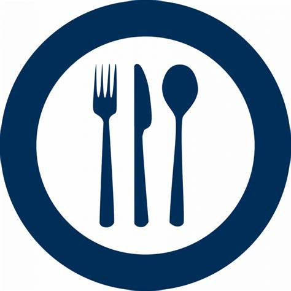

Panes artesanales
Explora nuestra exquisita variedad de panes artesanales, cuidadosamente elaborados para satisfacer los paladares más exigentes.
Desde la rusticidad del pan de masa madre, con su corteza crujiente y miga aireada,
hasta la dulzura del pan de nueces y pasas que deleita con cada bocado.

Pan Integral
Es el más nutritivo y tiene un sabor más robusto que el pan blanco.

Pan de masa dulce
Es una categoría general que incluye panes dulces, como el pan de canela, el pan de pasas
o los panes de frutas.

Pan de masa madre
Es una mezcla de harina y agua fermentada que contiene levaduras y bacterias salvajes.
Información
Nuestros Servicios
Eventos

Restaurantes
Entrega a domicio
Darle sabor a tus fiestas y eventos.Para que disfrutes en compañia de tus familiares y amigos.
Información

Dato curioso
Si el pan mantiene el sabor por un largo tiempo después de saborearlo es señal de que ha sido elaborado mediante procesos tradicionales con tiempos de fermentación larga.
Más aquí
Testimonios

Ana Martin
Como amante de la comida saludable, encontrar una panadería artesanal que utilice ingredientes naturales y procesos tradicionales fue un verdadero hallazgo. Los panes integrales y sin aditivos son deliciosos y se ajustan perfectamente a mis preferencias dietéticas.
Estoy agradecida por esta opción que cuida de mi bienestar y satisface mi paladar.
Emma Peréz
No sabía que el pan pudiera ser tan increíble hasta que probé los productos de esta panadería artesanal.
Cada bocado es como una obra de arte culinaria. La dedicación y el amor por el proceso de horneado se reflejan en cada detalle de sus panes.
Sin duda, se ha convertido en mi lugar favorito para comprar pan.